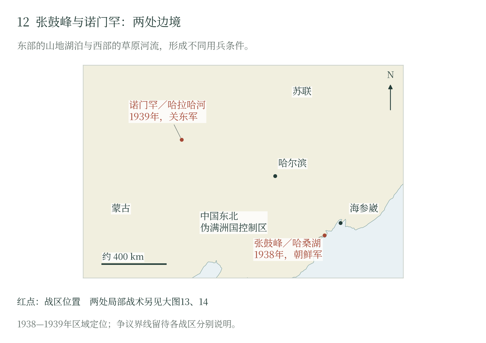

第十一章 张鼓峰与诺门罕：边境战争的组织与升级
张鼓峰／哈桑湖：高地争夺与战争规模
到1930年代，日本控制中国东北，朝鲜则继续处于其殖民统治之下，日苏军事接触的地理条件已经改变。1938年张鼓峰冲突发生在图们江与哈桑湖附近，日方主力是朝鲜军第19师团；次年的诺门罕战争发生在呼伦贝尔与蒙古草原之间，以关东军第23师团为核心。两个战场分别受不同司令部、道路和边界主张支配。〔1〕
边界主张与高地的军事价值
张鼓峰为苏方所称扎奥焦尔纳亚高地，其北的沙草峰对应无名高地。湖泊在山脊以东，图们江从西侧绕向南方，朝鲜、伪满洲国控制地区与苏联滨海地区在此接近。高地提供观察与射界，狭窄的接近地便于守军集中火力；控制山脊也能影响沿湖部队的后方运动。〔2〕
双方分别依据条约和地图提出边界主张。苏方援引中俄条约及珲春协定附图，坚持讨论标界或重立界标；日方援引另一组地图主张争议地属于满洲，并要求先停止军事行动。外交争执围绕同一山地展开，日本对伪满洲国的支持也使中国东北的边境问题进入日苏交涉。〔3〕
战争规模同时受到日本在华用兵的制约。美国驻日大使转报的日本高层说法，强调此时不愿同苏联扩大冲突。作战中，朝鲜军第19师团及其第75联队承担高地争夺；苏方则由远东方面军组织第39步兵军和所属步兵师投入，边防部队另有指挥系统。中央限制战争的意向，要经战区与前线落实，局部行动又会改变其随后需要处理的局面。〔4〕
夜袭、反攻与协同困难
7月29日，高地附近已经交火。苏方公报称日满部队进攻后被边防军击退；30日夜至31日凌晨，日军第75联队部队夜袭夺取张鼓峰阵地。战斗随即转为守山与反攻，火炮、坦克和航空兵陆续投入，争执从边境警戒扩大为有组织的阵地战。〔5〕
8月6日，苏军集中反击。第40步兵师命令要求与第32师协同，分别向扎奥焦尔纳亚和北侧无名高地行动，并以步兵、坦克保障侧翼。雾、沼泽和坡地打乱进攻节奏，坦克发生陷车，部分车辆抵达后支援步兵，山顶与斜坡仍持续分段争夺。〔6〕
苏方总结将困难具体归于侦察、准备和兵种配合：地形不适于大量坦克同时冲击，指挥员协同准备不足，火力未能充分压制反坦克武器。总结因而建议将部分坦克用作机动火力，加强同步兵的联系。装甲优势需要通路、目标情报和步兵掩护才能兑现，部队在反复攻击中重新调整其使用方法。〔7〕
高地上的部队还受制于通信。少量电话线暴露在炮火下，沼泽和石地妨碍架线，道路又难以承担运输；指挥所一移动，指挥员离开通信位置，无线电使用再不熟练，前线消息便更难及时送回。前线还缺少步兵，临时补充难以及时到位，后方勤务又要分走人手；能够在山前集中投入的力量因而少于编制上的数字。 〔8〕
停火与阵地交接
日方同期刊物所载协议规定，8月11日正午按苏联滨海省时间停火，维持11日零时（即10日午夜）阵位，实施细节交前线商定。此后接续办理位置互认、主力退离山脊及遗体交换；刊物还记载13日双方未能交换签字地图。停止射击使阵地争夺告一段落，划界和现场移交则继续需要交涉。〔9〕
战斗给双方留下了沉重的补员和救治负担。俄方后出汇总列苏军不可恢复损失960人，其中包括死亡和失踪，另列伤病；美军军史采用的日军约数为死亡逾500、负伤逾900。不同材料的分类保留着各自统计范围，也显示两座高地的争夺消耗了相当数量的人员。〔10〕
诺门罕／哈拉哈河：边境处置权如何变成会战
警戒冲突与增援权限
诺门罕争执集中于哈拉哈河及其东侧草原。日满方面主张以河流为界，苏蒙方面主张的界线更在河东诺门罕附近。蒙古骑兵到河东放牧、巡逻，在苏蒙看来属于本境活动，在日满看来则是越界。双方对同一活动的解释相反，驱逐、返回和增援随之反复发生。〔11〕
参战机构也分属不同层次。日方由关东军和第23师团指挥，伪满洲国骑兵及警戒部队参与；蒙古人民革命军骑兵与边防力量承担自身任务，苏军以驻蒙古第57特别军为基础，后来组成朱可夫统率的第1集团军群。日方8月又增设第6军。作战规模扩大，伴随着上级指挥机关及调兵能力的重组。〔12〕
1939年春，关东军制定的边境纠纷处理方针把惩罚性打击作为压制冲突的办法，并赋予地方指挥官在边界不明地区主动处置的权限。5月11日前后交火后，第23师团长小松原道太郎派出搜索队，试图迅速解决事件；28—29日，东八百藏部队在切断对方退路的行动中遭到苏蒙反击，陷入包围并受重创。地方处置机制推动了最初出兵，关东军随后下令扩大作战并持续增援。〔13〕
6月，关东军又把航空攻击扩大到塔木察格地区。中央要求限制空袭，战区却先行动、后报告，把已经造成的局面留给中央收拾。关东军企图用一次更重的打击结束边境麻烦，结果继续给对手增援和反击的理由。地方将领追求的局部胜利，让全国承担了更大的开战风险。 〔14〕
两岸攻势与草原运输
7月初，日军实行两岸包围。一部越过自己主张为边界的哈拉哈河，夺取西岸巴音查岗方向高地，准备切断苏军交通；安冈支队和步兵从东岸进攻，谋求合击。苏军投入坦克、装甲车与步兵反击，西岸日军的后送和补给依赖单一浮桥，难以维持，遂退回东岸；东岸突击也未取得预期突破。桥梁、炮兵射界以及装甲与步兵抵达的先后，直接决定了包围计划的成效。〔15〕
日军增调炮兵后于7月23—25日再攻东岸阵地，仍未压倒苏军火力，消耗与伤亡继续累积。随后双方修筑阵地、补充人员并实施局部突击。河西较高地形有利于苏军观察，日军阵地虽有沙丘遮蔽，却持续承受炮击、缺水和夜间运输困难。〔16〕
离开铁路，弹药和粮食还要靠车队送到草原。日本陆军曾把距铁路基地约200—250公里看作大部队补给的一般限度，据此低估了苏军从更远端点集中物资的能力。苏方继续调集车辆、组织运输、积存物资，准备新的攻势。日军第23师团也陆续得到其他师团、炮兵和装甲部队增援，却须在连续损耗中让新到部队重新配合。双方比拼的，已经包括谁能把后方的人和物持续送到前线。 〔17〕
八月包围与九月停止战争
8月20日，苏蒙部队发动攻势，中央牵制、南北两翼包围。北翼高地的抵抗拖慢进展，南翼较快突破并转向北方；日军对主攻方向的判断和增援安排受到扰乱，部队相继被切断，联络逐渐中断。到月底，第23师团主要作战集团遭到严重打击，部分部队仍在抵抗或寻机脱出。大规模炮兵、装甲和运输的集中，使苏军得以把两翼不同节奏的推进接成包围。〔18〕
日军也在战斗中总结经验。8月31日第6军《战斗教令》继续强调夜间机动，同时要求步炮保持联系、攻占阵地后迅速配置反坦克火器，并准备应付后方补给被切断。调整已有具体内容，装备、训练和组织能力却仍需时间形成。战后的中央总结承认火力装备与运用缺陷，在华战争又继续同这些改进争夺预算和资源。〔19〕
人员损失反映了数月升级的代价。Drea的军史概括日军死亡8440、负伤8766；苏方后出汇总将不可恢复损失列为9703，其中含失踪，伤病另计。前线既须补充战斗力量，又须运走伤员、寻找失散人员，草原运输因此同时承担进攻与救治任务。〔20〕
战场受挫以后，中央在9月初否决再次扩大战事的建议，关东军6日下令停止诺门罕方向主力攻势。南侧努木尔格河方向等地仍有冲突，外交停战由此承担了终止剩余战斗的任务。15日东乡茂德与莫洛托夫达成口头约定：16日莫斯科时间2时停止军事行动，维持15日13时的阵线，由前线代表办理执行、俘虏及遗体交换，再设两方各两人的委员会澄清边界。〔21〕
停战后的交接与定界分步进行，俘虏交换延续到次年。边界委员会在赤塔、哈尔滨交涉，到1940年6月形成进一步安排。战争借助军事命令和外交程序退出，部队的整顿与边界问题的处理则持续到战斗之后。〔22〕
交换归还以后，部分将兵受到本国军队的追究。关东军1939年11月的报告记录了起诉、判刑与纪律处分。战斗已经结束，生还者仍须面对军队对被俘经历的审查。〔23〕
两场边境战争让东京看见了放任地方扩大战事的代价：几座高地、一道河流的争执，接连牵动炮兵、车队、补员与外交。到1941年，日本仍在中国作战，又须顾及北方准备和南方局势。领导人要决定保留哪些目标，也要决定为这些目标再调多少兵、再承受多少损失。

张鼓峰在图们江与哈桑湖附近，日方主力属朝鲜军；诺门罕在哈拉哈河一带，以关东军为主要指挥机关。两地的道路、地形与补给距离不同，升级的过程也各有脉络。
随文简图 · 自然地理底图：Natural Earth；历史依据见本章注及大图12逐图来源。大图12（图册第12页）
本章注释
- 〔1〕 B301，页1—4、13—14 ↩
- 〔2〕 B301，页20；B319，页214—220 ↩
- 〔3〕 B320，文件459、465，页463—464、467—469 ↩
- 〔4〕 B320，文件450，页458—459；B301，页13—14、20；B319，页225—228 ↩
- 〔5〕 B320，文件451、454；B301，页20 ↩
- 〔6〕 B313，8月6日命令及战况节录；B319，页214—220 ↩
- 〔7〕 B319，页215—221 ↩
- 〔8〕 B319，页225—231；B316，页116—117 ↩
- 〔9〕 B390，页28—29 ↩
- 〔10〕 B319，页63—65；B301，页13—14 ↩
- 〔11〕 B301，页3—4、14 ↩
- 〔12〕 B301，页1、9、14、28；B304，页437—441；B309，正文 ↩
- 〔13〕 B301，页14、21、27—28；B304，页436—441 ↩
- 〔14〕 B302，页4—8 ↩
- 〔15〕 B301，页4、7、32 ↩
- 〔16〕 B301，页7、23—27、61—65；B304，页430—434 ↩
- 〔17〕 B304，页429—430、438—440；B301，页24—27 ↩
- 〔18〕 B301，页9—11；B304，页428、728—733 ↩
- 〔19〕 B307，帧1、4—10；B304，页733—734 ↩
- 〔20〕 B301，页9—11；B318，表87—88 ↩
- 〔21〕 B304，页726—729；B309，正文；B310，页83—86 ↩
- 〔22〕 B304，页729—730、734—735 ↩
- 〔23〕 C902，帧2—3 ↩